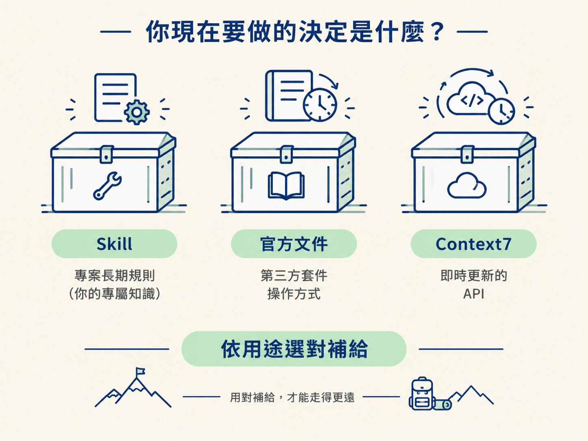
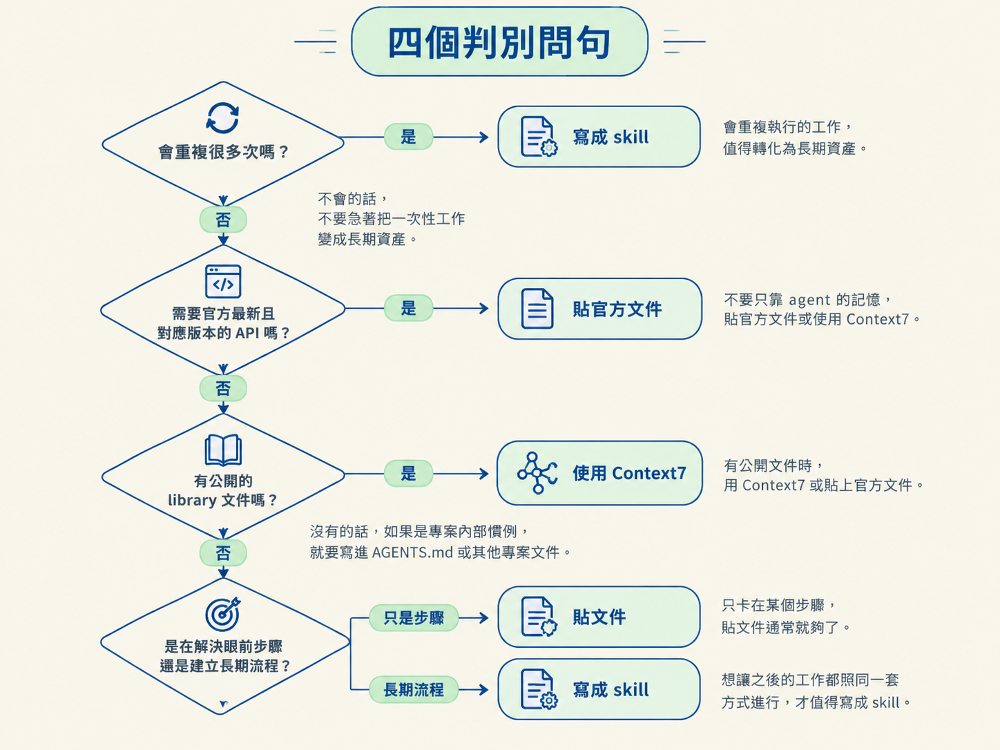
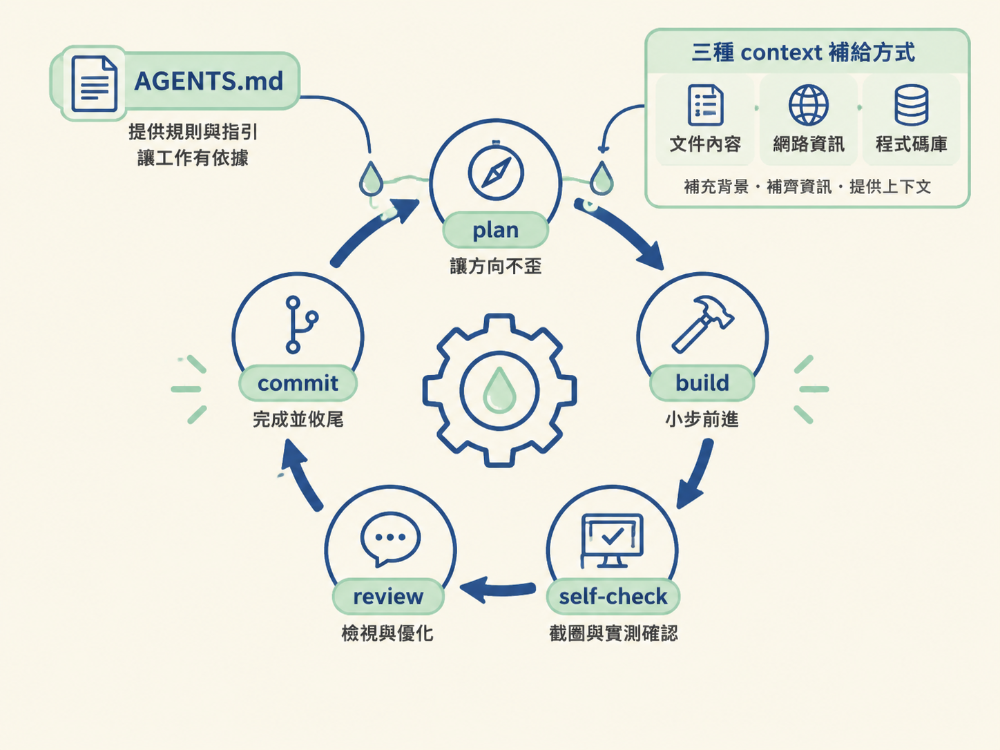

上一節你已經能讓 agent 把畫面做到和設計一致。接下來，你要接上 Clerk、Convex、Stream 或其他還在快速改版的第三方服務，問題就會變成：agent 取得的知識，還跟得上現在的 API 嗎？
模型可能寫出一段看起來很合理的程式，但那段語法也許只適用於舊版本。它的訓練資料有截止日期，服務的 API 卻沒有停下來等它。這時真正要做的決定，不是「要不要相信 agent」，而是「我要用什麼方式，把正確而且最新的 context 交到它手上」。
你可以把 context 想成 agent 的補給品：有些補給是你專案自己的長期規則，有些是第三方套件的官方操作方式，還有些則必須隨著版本即時更新。三種方式各有適合的場合，選錯就像拿登山糧食去修車：不是東西不好，只是用途對不上。

選擇時，主要有兩股力量在拉扯。一邊是省事：希望規則只寫一次，之後 agent 自己記得，不必每次重新交代。另一邊是正確：第三方 API 會變，但你的專案慣例通常不會跟著每天變動。
因此，會變的知識不適合只靠長期記憶；不變的規則也不需要每次重新貼上。先看下面這張表，找出你手上的知識屬於哪一類。
| 手段 | 它是什麼 | 最適合 | 不適合 |
|---|---|---|---|
| Skill | 把重複流程寫成可重複使用的指示集，放在 .claude/skills 或 .agents/skills，並在 session 開始時自動載入 | 會反覆執行的工作流，例如截圖比對迴圈、團隊的審查慣例 | 一次性的 API 細節；每個小設定都寫成 skill，會讓指示庫膨脹 |
| 貼官方文件 | 把官方文件頁面複製成 markdown，貼進對話，請 agent 照著做、不要自行延伸 | 第一次接觸新套件，或需要依照官方步驟設定時 | 文件很長而且只會用一次；每次都貼同一份內容會很囉唆 |
| Context7 | 讓 agent 查詢即時、與版本對應的公開 library 文件 | 需要最新 API，又不想手動複製整頁官方文件時 | 專案內部慣例；Context7 查的是公開文件，找不到你的私有規則 |
這裡的重點是配對不同種類的知識，而不是選出一個永遠最好的工具：
遇到新工具或卡住的流程時，可以先問自己下面四句。答案通常就能把選項縮小。

把一次性的設定也寫成 skill。 如果每個小套件都各自有一個 skill，開啟新 session 時，agent 會載入一堆當下用不到的指示。真正重要的規則反而可能被淹沒。Skill 要留給「會重複的流程」；一次性的事情，貼文件就好。
需要最新 API 時，只靠 agent 的記憶。 這是常見而且代價很高的錯誤。agent 可能用舊版本語法寫出一段頭頭是道的程式，直到編譯時才發現 API 已經對不上。只要某個服務改版很快，就應該預設記憶可能過時，主動用 Context7 或官方文件校正。
把專案內部慣例交給 Context7。 Context7 查的是公開套件文件，不是你的專案規範。像「本專案一律使用 native tabs」這種規則，它不可能替你查到。這類內容應該放在 AGENTS.md 或專案文件裡。
除了補充 context，課程裡還有一個常見的加速方式：同時開第二個 agent instance，讓兩件獨立的工作並行處理。
例如，一個 instance 正在執行原生建置、需要等待結果時，另一個 instance 可以先處理另一份設定。不過這個做法有清楚的邊界：如果兩件工作會修改同一批檔案，平行執行可能互相覆蓋，最後反而更難收拾。
判斷方式很簡單：兩件工作有沒有共用檔案？ 沒有，才適合開平行 instance；有，就讓它們依序處理。
先判斷知識的種類：重複的專案流程寫成 Skill，放在.claude/skills或.agents/skills，由 session 開始時自動載入；第一次接新套件、只需要解決眼前設定時，貼官方文件；需要公開且最新的版本 API 時，用 Context7；專案內部慣例則寫進 AGENTS.md。若要開平行 instance，再確認兩件工作不會共用檔案。
回到整條建造迴圈：plan 讓方向不歪，build 讓工作小步前進，self-check 用截圖與實測確認，review 與 commit 負責收尾。AGENTS.md 和這三種 context 補給方式，則像替每一圈加上的潤滑油，讓 agent 少走冤枉路。

現在你已經有一套可以套用到新點子的工作流：先判斷要餵給 agent 哪一種知識，再選擇適合的補給方式，最後把它放回真正的 app 裡驗證。